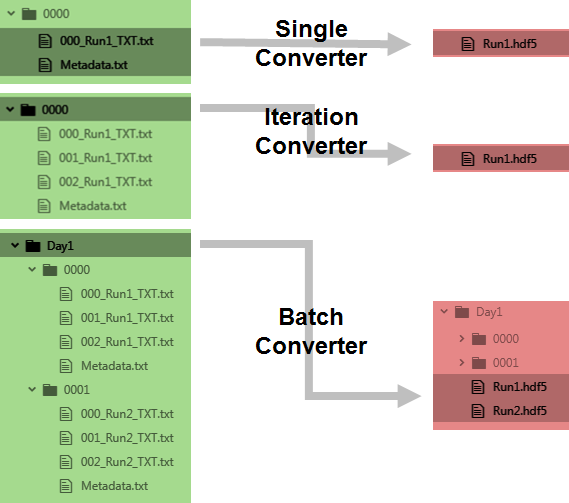

For analysis of data from the smfBox we recommend the FRETBursts python package, and provide Jupyter Notebooks with which to do this.
Jupyter Notebooks run in browser, and can be easily edited by anyone with a knowledge of python whilst remaining accessible to non-programmers. They can also be published as stand alone .html's for transparent presentation of data alongside the analysis exactly as it was performed. See here for an example. To set this up:
2. In the anaconda prompt type "conda install fretbursts -c conda-forge", and follow instructions in the prompt. For more information on installing FRETbursts go here
3. Download the analysis Jupyter Notebooks from our github here
4. Open the anaconda navigator, run Jupyter, and navigate to the notebooks from within your web browser.
Data Files

Types of data converter we provide for the smfBox
The acquisition software saves txt files which contain the timestamp of each photon in one column and the detector it arrived at in a second column. For usage in analysis we have created python scripts which can convert these TXT files to the open source photon-HDF5 format. This format contains not only the raw data but also can be written with sufficient metadata that the reader knows i. the origin and nature of the sample and experiment the data was acquired from and ii. Information required to interpret it. In this case the data originates from two unpolarised detectors acquired with a μs-ALEX scheme, and the script will write an HDF5 file which contains information for any analysis software to interpret it as such.
The scripts provided can convert a single TXT to a single HDF5, multiple TXT’s from one acquisition (iteration conversion) into one HDF5, or multiple runs into their respective HDF5's (batch conversion).
These conversion scripts are available as Jupyter Notebooks, as the analysis we provide is with the FRETBursts python module in Jupyter. However there is no reason why the code should not work in any other python environment as long as it has the phconvert module.
phconvert will automatically install alongside FRETBursts if you have followed the instructions above.
Analysis
We provide user friendly Jupyter notebooks for derivation and application of accurate FRET correction factors as shown in the paper. Once downloaded from the github you can run them in anaconda according to the instructions within, using shift+enter to execute each cell. Minimal modification of the code cells is necessary.
1. If you are not doing accurate FRET and are only looking for relative changes, skip the correction factor derivation and move straight to the FRET analysis notebook (step 4).
2. If you do intend to do accurate FRET, first run the spectral cross talk correction factor finder to get alpha and delta. This should work on a doubly labelled sample by identifying single dye species in solution. This is arguably a more robust approach as the singly fluorescent species extracted from the data are subject to exactly the same conditions as the doubly labelled species which the correction factors will then be applied to. However, this approach can be difficult for smaller datasets, or for samples with very good labelling efficiency, so you may wish to run this notebook on a separate donor only labelled sample to find alpha, and an acceptor only labelled sample to find delta.
3. Next run the gamma / beta finder, this requires multiple FRET efficiencies to work. If your sample exhibits multiple states (eg. high FRET and low FRET) then this can work on a single data set, however multiple data sets with different FRET efficiencies can be read in to this notebook if necessary.
4. With correction factors found you can run the FRET analysis notebook defining the four correction factors at the beginning. Burst-by-burst information (which include the FRET efficiency distribution) can be exported here as .csv's for further analysis else where if necessary
The FRETBursts github also contains notebooks for the BVA and 2CDE analysis techniques which are worth looking into if you are interested in dynamics.
References
FRETBursts: An Open Source Toolkit for Analysis of Freely-Diffusing Single-Molecule FRET
Ingargiola et al. (2016). http://dx.doi.org/10.1371/journal.pone.0160716
Ingargiola A, Laurence T, Boutelle R, Weiss S, Michalet X. Photon-HDF5: open data format and computational tools for timestamp-based single-molecule experiments. In: Single Molecule Spectroscopy and Superresolution Imaging IX. vol. 971405. SPIE; 2016. Available from: http://dx.doi.org/10.1117/12.2212085.